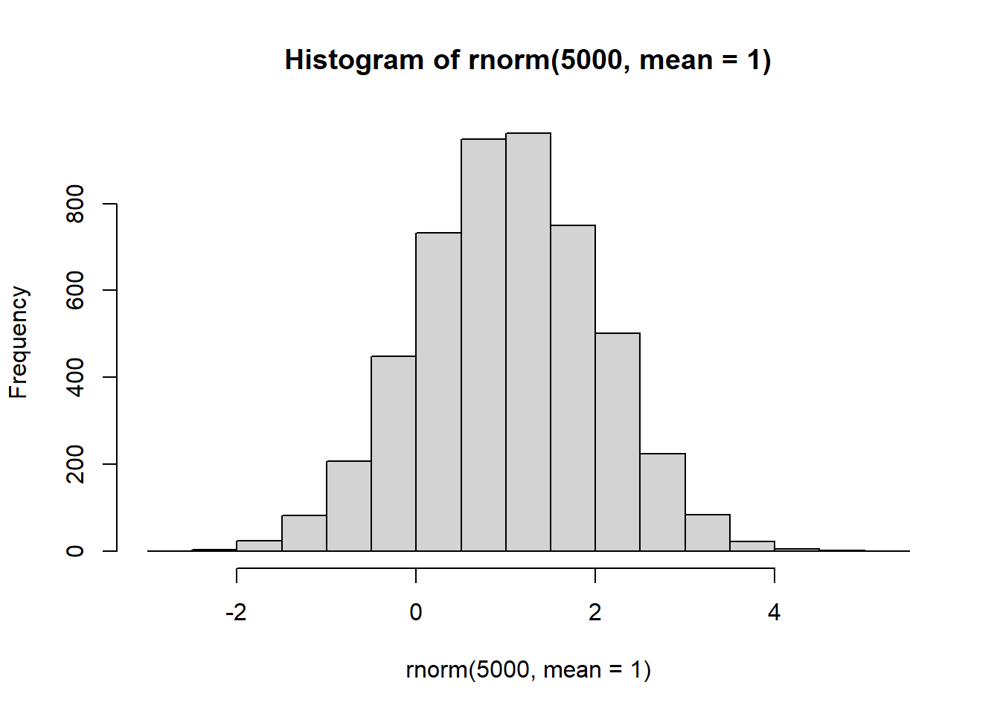
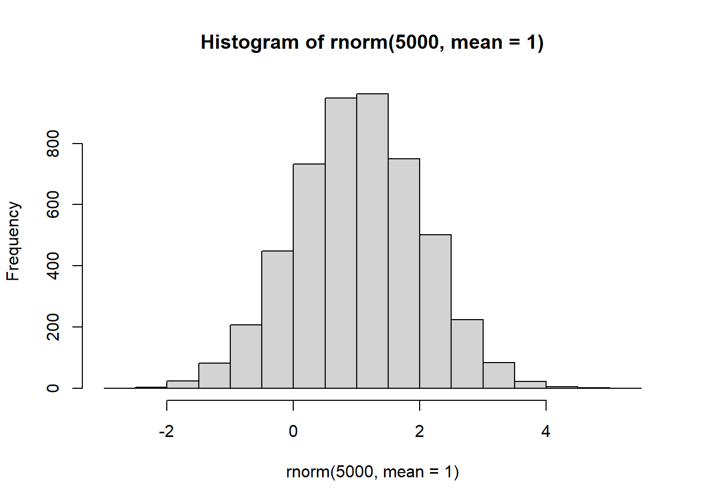
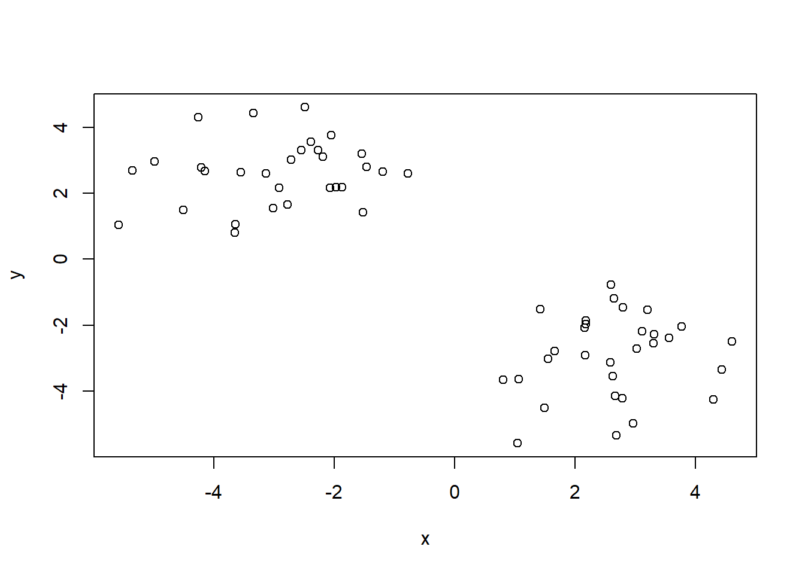
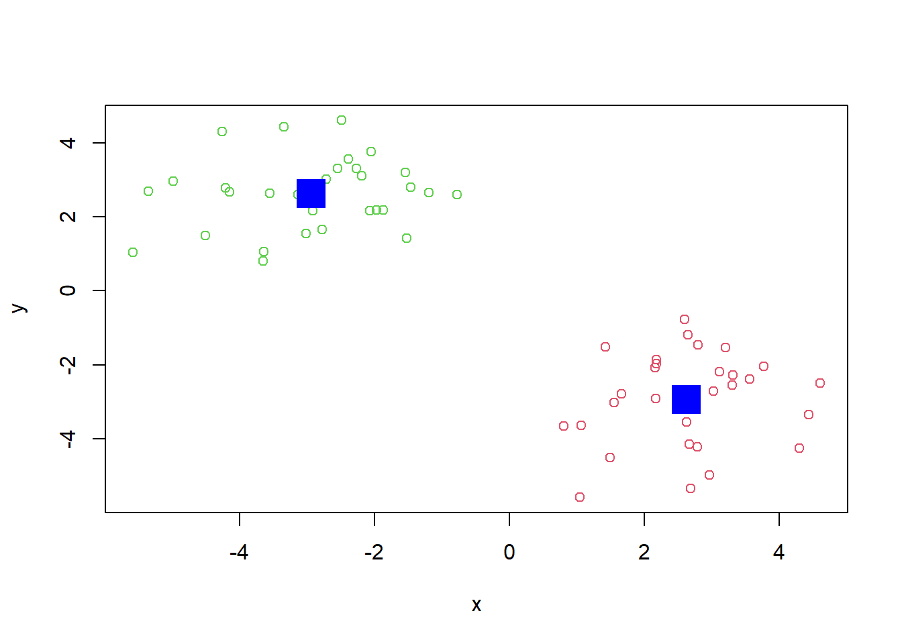
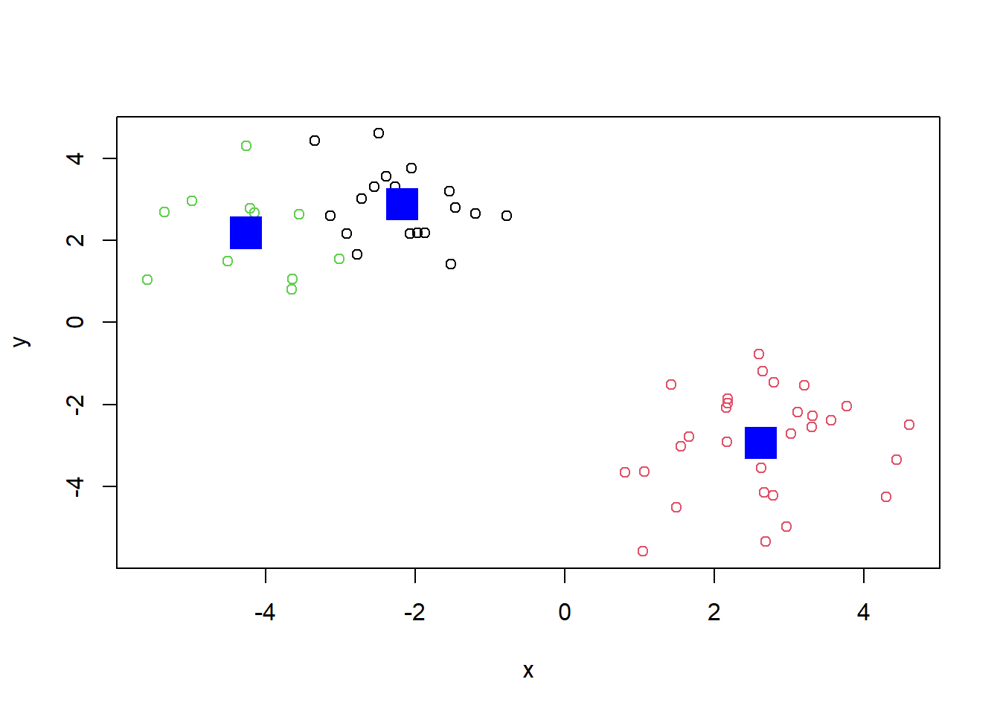
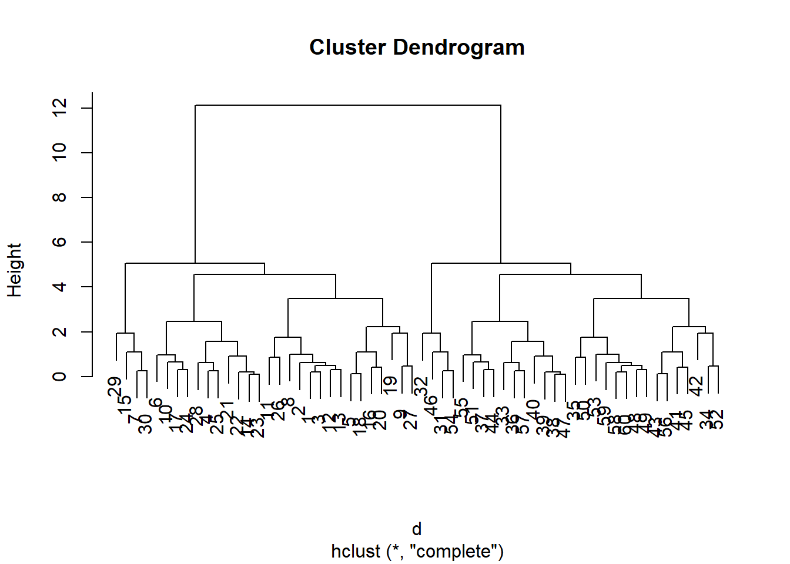
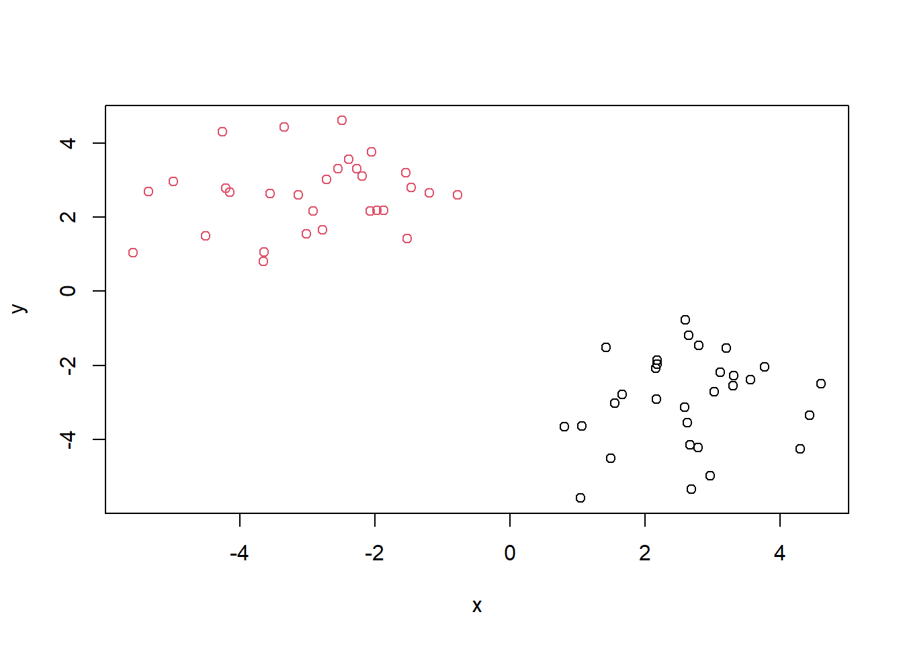
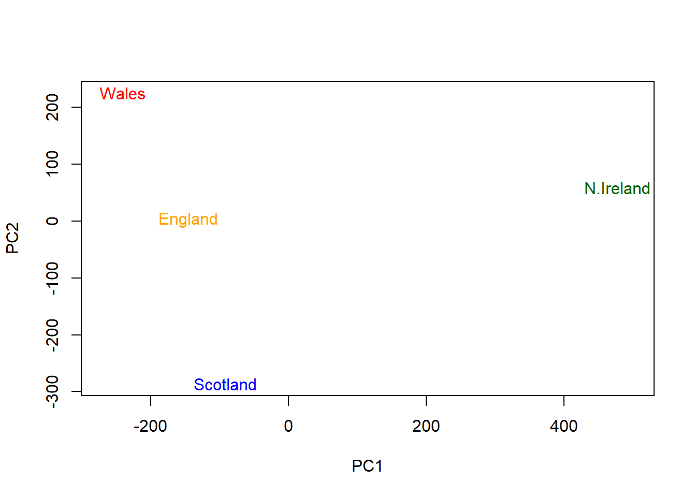

hist(rnorm(5000, mean=1))
We can use the rnorm() function to get random numbers from a normal distribution around a given mean.
hist(rnorm(5000, mean=1))
Let’s get 30 points with a mean of 3.
rnorm1 <- rnorm(30, mean=3)
rnorm1 [1] 3.0748214 2.9140131 2.8095811 3.3477082 1.8936892 3.0385310 4.3540114
[8] 3.4616944 3.1647144 2.9270168 2.2866782 3.1740964 4.3138157 2.6067250
[15] 2.3732292 0.9974841 2.5173488 2.3384774 4.4640759 1.9950615 2.5190661
[22] 4.6419446 2.2406096 2.1878564 2.9729941 2.1365422 3.6265074 2.5698465
[29] 3.1006287 3.1288489# rnorm2 <- rnorm(30, mean=-30)
# rnorm2
# x <- c(rnorm1, rnorm2)
# x
# cbind(rnorm1, rnorm2)
# rev( c(1:5) )
# y <- cbind( rev(rnorm1), rev(rnorm2) )
# ytmp <- c(rnorm(30, mean=3), rnorm(30, mean=-3))
tmp [1] 3.3155838 3.0281034 3.1132274 1.6674582 2.6723357 2.6017949
[7] 0.8060844 3.7709718 2.6909386 3.2099610 4.6087783 3.5689460
[13] 3.3064260 2.1808433 1.4968538 2.6327997 2.6495313 2.7852100
[19] 4.3061908 2.5943930 1.4287378 2.1639152 2.1851036 2.7958914
[25] 1.5567396 4.4431922 2.9681929 2.1740461 1.0456627 1.0657350
[31] -3.6415161 -5.5819856 -2.9105276 -4.9808150 -3.3396277 -3.0166921
[37] -1.4655752 -1.9640613 -2.0707050 -1.5187397 -3.1296481 -4.2587013
[43] -4.2100121 -1.1916937 -3.5529372 -4.5031799 -1.8651920 -2.5499362
[49] -2.3902640 -2.4904537 -1.5401178 -5.3479933 -2.0447769 -3.6523569
[55] -0.7781971 -4.1475101 -2.7760463 -2.1888957 -2.7191408 -2.2681572# Put these two together
x <- cbind(x=tmp, y=rev(tmp))
x x y
[1,] 3.3155838 -2.2681572
[2,] 3.0281034 -2.7191408
[3,] 3.1132274 -2.1888957
[4,] 1.6674582 -2.7760463
[5,] 2.6723357 -4.1475101
[6,] 2.6017949 -0.7781971
[7,] 0.8060844 -3.6523569
[8,] 3.7709718 -2.0447769
[9,] 2.6909386 -5.3479933
[10,] 3.2099610 -1.5401178
[11,] 4.6087783 -2.4904537
[12,] 3.5689460 -2.3902640
[13,] 3.3064260 -2.5499362
[14,] 2.1808433 -1.8651920
[15,] 1.4968538 -4.5031799
[16,] 2.6327997 -3.5529372
[17,] 2.6495313 -1.1916937
[18,] 2.7852100 -4.2100121
[19,] 4.3061908 -4.2587013
[20,] 2.5943930 -3.1296481
[21,] 1.4287378 -1.5187397
[22,] 2.1639152 -2.0707050
[23,] 2.1851036 -1.9640613
[24,] 2.7958914 -1.4655752
[25,] 1.5567396 -3.0166921
[26,] 4.4431922 -3.3396277
[27,] 2.9681929 -4.9808150
[28,] 2.1740461 -2.9105276
[29,] 1.0456627 -5.5819856
[30,] 1.0657350 -3.6415161
[31,] -3.6415161 1.0657350
[32,] -5.5819856 1.0456627
[33,] -2.9105276 2.1740461
[34,] -4.9808150 2.9681929
[35,] -3.3396277 4.4431922
[36,] -3.0166921 1.5567396
[37,] -1.4655752 2.7958914
[38,] -1.9640613 2.1851036
[39,] -2.0707050 2.1639152
[40,] -1.5187397 1.4287378
[41,] -3.1296481 2.5943930
[42,] -4.2587013 4.3061908
[43,] -4.2100121 2.7852100
[44,] -1.1916937 2.6495313
[45,] -3.5529372 2.6327997
[46,] -4.5031799 1.4968538
[47,] -1.8651920 2.1808433
[48,] -2.5499362 3.3064260
[49,] -2.3902640 3.5689460
[50,] -2.4904537 4.6087783
[51,] -1.5401178 3.2099610
[52,] -5.3479933 2.6909386
[53,] -2.0447769 3.7709718
[54,] -3.6523569 0.8060844
[55,] -0.7781971 2.6017949
[56,] -4.1475101 2.6723357
[57,] -2.7760463 1.6674582
[58,] -2.1888957 3.1132274
[59,] -2.7191408 3.0281034
[60,] -2.2681572 3.3155838plot(x)
Very popular clustering method for big data sets.
km <- kmeans(x, 2)
kmK-means clustering with 2 clusters of sizes 30, 30
Cluster means:
x y
1 2.627788 -2.936515
2 -2.936515 2.627788
Clustering vector:
[1] 1 1 1 1 1 1 1 1 1 1 1 1 1 1 1 1 1 1 1 1 1 1 1 1 1 1 1 1 1 1 2 2 2 2 2 2 2 2
[39] 2 2 2 2 2 2 2 2 2 2 2 2 2 2 2 2 2 2 2 2 2 2
Within cluster sum of squares by cluster:
[1] 73.01019 73.01019
(between_SS / total_SS = 86.4 %)
Available components:
[1] "cluster" "centers" "totss" "withinss" "tot.withinss"
[6] "betweenss" "size" "iter" "ifault" km$cluster [1] 1 1 1 1 1 1 1 1 1 1 1 1 1 1 1 1 1 1 1 1 1 1 1 1 1 1 1 1 1 1 2 2 2 2 2 2 2 2
[39] 2 2 2 2 2 2 2 2 2 2 2 2 2 2 2 2 2 2 2 2 2 2km$size[1] 30 30km$centers x y
1 2.627788 -2.936515
2 -2.936515 2.627788Q: How many points are in each cluster?
# We can use km$size to see how many points are in each cluster
# In this case, there are 30 points in each cluster
km$size[1] 30 30Q: What ‘component’ of your result object details:
cluster size?
cluster assignment/membership?
cluster center?
# Cluster size
km$size[1] 30 30# Membership
km$cluster [1] 1 1 1 1 1 1 1 1 1 1 1 1 1 1 1 1 1 1 1 1 1 1 1 1 1 1 1 1 1 1 2 2 2 2 2 2 2 2
[39] 2 2 2 2 2 2 2 2 2 2 2 2 2 2 2 2 2 2 2 2 2 2# Cluster center
km$centers x y
1 2.627788 -2.936515
2 -2.936515 2.627788Q: Plot x colored by the kmeans cluster assignment and add cluster centers as blue points.
mycols <- km$cluster
mycols <- mycols + 1
plot(x, col = mycols)
points(km$centers, col = 'blue', pch = 15, cex = 3)
Q: Let’s cluster into 3 groups or same ‘x’ data and make a plot.
km2 <- kmeans(x, 3)
km2K-means clustering with 3 clusters of sizes 19, 30, 11
Cluster means:
x y
1 -2.168513 2.884574
2 2.627788 -2.936515
3 -4.263064 2.184249
Clustering vector:
[1] 2 2 2 2 2 2 2 2 2 2 2 2 2 2 2 2 2 2 2 2 2 2 2 2 2 2 2 2 2 2 3 3 1 3 1 3 1 1
[39] 1 1 1 3 3 1 3 3 1 1 1 1 1 3 1 3 1 3 1 1 1 1
Within cluster sum of squares by cluster:
[1] 21.21938 73.01019 17.81023
(between_SS / total_SS = 89.6 %)
Available components:
[1] "cluster" "centers" "totss" "withinss" "tot.withinss"
[6] "betweenss" "size" "iter" "ifault" plot(x, col = km2$cluster)
points(km2$centers, col = 'blue', pch = 15, cex = 3)
We can use the hclust() function for hierarchical clustering. Unlike kmeans() where we could just pass in our own data as input, we need to give hclust() a “distance matrix” (how far apart the points are, e.g. Euclidean distance dist() or other types of distance).
We will use the dist() function to start with.
d <- dist(x)
hc <- hclust(d)
hc
Call:
hclust(d = d)
Cluster method : complete
Distance : euclidean
Number of objects: 60 plot(hc)
I can now “cut” my tree with the cutree() function to yield a cluster membership vector.
grps <- cutree(hc, h=8)
grps [1] 1 1 1 1 1 1 1 1 1 1 1 1 1 1 1 1 1 1 1 1 1 1 1 1 1 1 1 1 1 1 2 2 2 2 2 2 2 2
[39] 2 2 2 2 2 2 2 2 2 2 2 2 2 2 2 2 2 2 2 2 2 2plot(x, col = grps)
You can also tell cutree() to cut where it yields “k” groups.
cutree(hc, k=2) [1] 1 1 1 1 1 1 1 1 1 1 1 1 1 1 1 1 1 1 1 1 1 1 1 1 1 1 1 1 1 1 2 2 2 2 2 2 2 2
[39] 2 2 2 2 2 2 2 2 2 2 2 2 2 2 2 2 2 2 2 2 2 2url <- "https://tinyurl.com/UK-foods"
x <- read.csv(url, row.names = 1)
# Q2: This solves the 'row-names problem'. In my opinion, this way is better since it automatically sets the first column as the names column, which makes operating on the dataset easier.# Finding number of rows and columns
dim(x)[1] 17 4# Q1: We have 17 rows and 4 columns, where each column is a country.# Using head to preview first 6 rows
head(x) England Wales Scotland N.Ireland
Cheese 105 103 103 66
Carcass_meat 245 227 242 267
Other_meat 685 803 750 586
Fish 147 160 122 93
Fats_and_oils 193 235 184 209
Sugars 156 175 147 139# Generating barplot
barplot(as.matrix(x), beside=F, col=rainbow(nrow(x)))
# Q3: We set beside=FALSE to change the barplot into a stacked format instead of the bars being side by side.# Generating pairwise plots.
pairs(x, col=rainbow(10), pch=16)
# Q5: If a point lines on the diagonal, then that means that the country on the y-axis and the country on the x-axis have the same amount of that product. Q5: If a datapoint is on the diagonal, then the countries have the same amount of that product. If a datapoint is above the diagonal then the country on the y-axis has a higher amount of that product. If a datapoint is below the diagonal line (i.e. further to the right) then the country on the x-axis has more of that product.
Q6: N. Ireland has more of the blue datapoint than other countries, since that datapoint is further to the right on the graph (below diagonal) when N. Ireland is plotted on the x-axis, and higher up on the graph (above diagonal) when N. Ireland is plotted on the y-axis.
The main PCA function in base R is called prcomp() it expects the transpose of our data.
pca <- prcomp( t(x) )
summary(pca)Importance of components:
PC1 PC2 PC3 PC4
Standard deviation 324.1502 212.7478 73.87622 4.189e-14
Proportion of Variance 0.6744 0.2905 0.03503 0.000e+00
Cumulative Proportion 0.6744 0.9650 1.00000 1.000e+00attributes(pca)$names
[1] "sdev" "rotation" "center" "scale" "x"
$class
[1] "prcomp"# Q7: Competing the pca plot code.
plot(pca$x[,1], pca$x[,2],
xlab="PC1", ylab="PC2",
col = 'transparent',
pch = 16,
xlim=c(-270,500))
# Q8: Customizing the plot by adding color.
text(pca$x[,1], pca$x[,2],
colnames(x),
col = c("orange", "red", "blue", "darkgreen"))